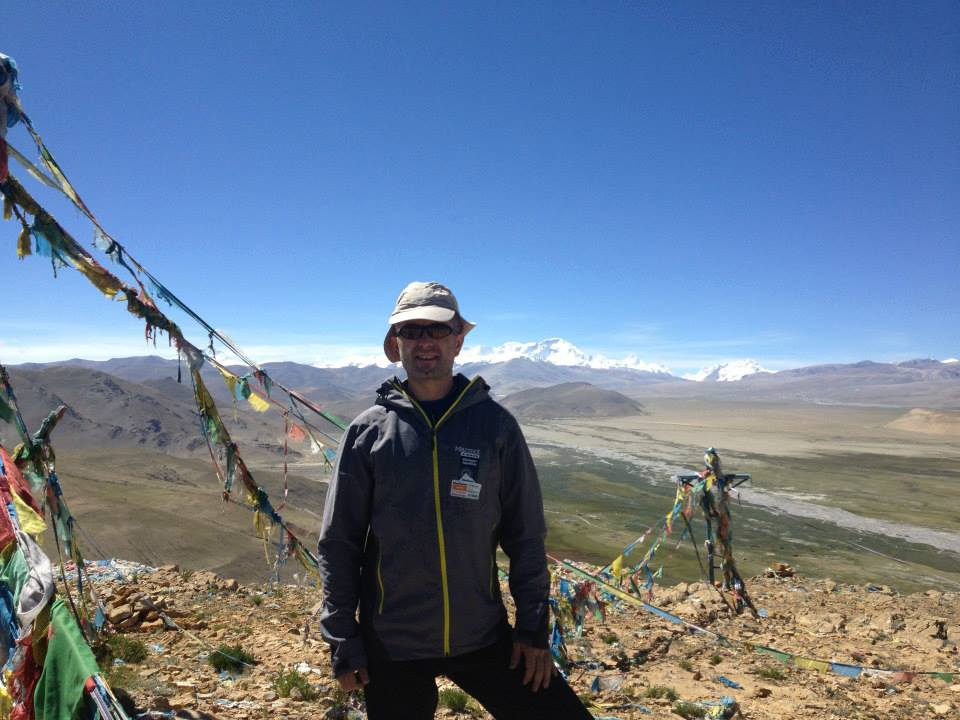
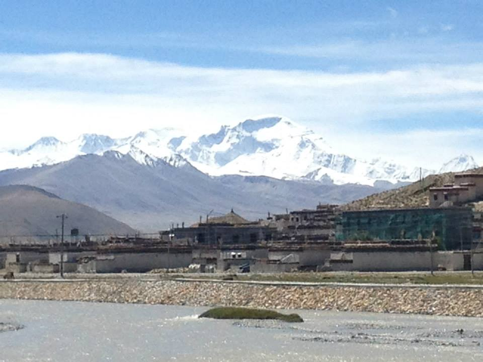

Setting up camp
With Z-Wave enabled devices in your home, you are offered security and innovation no matter if you are across the street, or around the world. Z-Wave puts in your hands the possibility to monitor your property and loved ones from anywhere you can access the internet. If this sounds like a Sci-Fi movie, you may be right. But, thanks to Z-Wave, all this this is all possible today.

During my expedition I will use the Z-Wave Home Automation System and a Smartphone to monitor and control my home in New Jersey from Tibet. I will be able to monitor (and adjust) the temperature, lock and unlock doors, and control the lighting. I can make the house look lived in, but controlled by me on the go, so I won't get a huge electric bill waiting for me when I come back from having fun on the mountain.
I will be able to also remotely participate in 2013 CEDIA Expo. I will be controlling devices in the Z-Wave Alliance pavilion from slopes of Cho Oyu. I will demonstrate how easy it is to use Z-Wave to make your life more simple, not more complicated. My example will be extreme, and if I can do it, so can you.Letting the plumber in ...
With Z-Wave enabled devices in your home, you are offered security and innovation no matter if you are across the street, or around the world. Z-Wave puts in your hands the possibility to monitor your property and loved ones from anywhere you can access the internet. If this sounds like a Sci-Fi movie, you may be right. But, thanks to Z-Wave, all this this is all possible today.

During my expedition I will use the Z-Wave Home Automation System and a Smartphone to monitor and control my home in New Jersey from Tibet. I will be able to monitor (and adjust) the temperature, lock and unlock doors, and control the lighting. I can make the house look lived in, but controlled by me on the go, so I won't get a huge electric bill waiting for me when I come back from having fun on the mountain.
I will be able to also remotely participate in 2013 CEDIA Expo. I will be controlling devices in the Z-Wave Alliance pavilion from slopes of Cho Oyu. I will demonstrate how easy it is to use Z-Wave to make your life more simple, not more complicated. My example will be extreme, and if I can do it, so can you.Arrived in Kathmandu ...
Arrived in Kathmandu, after 24hrs of flying and airports.

And guess what ? Z-wave works from here too:) I was able to control my Z-wave devices from Delhi airport , as well as from streets of Kathmandu
Visa problems ...
It would not be an adventure without some problems.... We learned today that our travel permit into Tibet will not be ready till Monday, so we have 2 more days in Kathmandu.
Travel permit, along with climbing permit, and Chinese visa is required for Cho Oyu expedition, we have other two but without Tibet travel permit we will not be allowed to enter Tibet.

So two more days of eating and growing anxious about mountains.Cheers!
Visa update ...
Hello there, So finally we have all permits and will be driving to Tibet early in the morning. Hurray , waiting was driving me crazy.
While waiting I did some cool mountain biking today , about 30 miles or so in Kathmandu valley... Good preparation for what is to come.
Eating last dinner before departure and this nice band is playing local music.
Next dispatch will be from Tibet,
Peace,MARIUSZ
Finally on the bus to Tibet ...
Hello there,
Finally on the bus to Tibet,
Stay tuned for more
Peace,MARIUSZ
Next stop Tibet ...
The border towns of Kodari (Nepal) and Zhangmu (Tibet).

In ancient times, Kodari was the starting point of a trans-Himalayan caravan route. Newar traders headed north from Kodari and after crossing Kuti pass turned east to continue their journey across the Tibetan Plateau to Lhasa.
China built the 115 kilometres (71 mi) Kathmandu-Kodari Road, since named Araniko Highway, during the 1963-67 period. As of 2011, Nepal is planning to convert the two lane highway to a six lane metalled highway.[1]It connects across the Sino-Nepal Friendship Bridge at the border to Friendshp Highway in the Tibet Autonomous Region of China.
Finally in the Himalayas ...
We arrived in Tingri, we will spend two days here for acclimatization before we move to Chinese basecamp.
Views from the Entrance to Mount Everest National Park ( Chomolungma or Qomolagnma) is the regional name for Mount Everest
 Cho Oyu the Turquoise Goddess
Cho Oyu is the sixth highest mountain in the world at 8,201 metres (26,906 ft) above sea level. Cho Oyu means "Turquoise Goddess" in Tibetan. The mountain is the westernmost major peak of the Khumbu sub-section of the Mahalangur Himalaya 20 km west of Mount Everest. The mountain stands on the Tibet-Nepal border.
Just a few kilometres west of Cho Oyu is Nangpa La (5,716m/18,753 ft), a glaciated pass that serves as the main trading route between the Tibetans and the Khumbu's Sherpas. This pass separates the Khumbu and Rolwaling Himalayas. Due to its proximity to this pass and the generally moderate slopes of the standard northwest ridge route, Cho Oyu is considered the easiest 8,000 metre peak to climb. It is a popular objective for professionally guided parties.
The mountain was first climbed on October 19, 1954, via the north-west ridge by Herbert Tichy, Joseph Jöchler and Sherpa Pasang Dawa Lama of an Austrian expedition. Cho Oyu was the fifth 8000 metre peak to be climbed, after Annapurna in June 1950, Mount Everest in May 1953, Nanga Parbat in July 1953 and K2 in July 1954.
Source: Wikipedia
Z-Wave Himalayan Expedition
by Kwikset
In September of 2013, the Z-Wave Himalayan Expedition by Kwikset will climb this 8201-meter peak, located in Tibet.
Press the pins to read blog-posts and watch videos from the expedition.